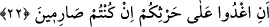

başka târife göre de uyku hafif bir ölüm, ölüm ağır bir uykudur. Bütün bu târiflerin
tamamı doğru târiflerdir.
20. (Ve hemen) bahçe kapkara kesildi.
Âyet-i kerîmede yer alan “sarîm” kelimesi meyveleri toplanmış bahçe anlamınadır.
Bu öyle bir bahçedir ki, orada meyve adına hiçbir şey kalmamıştır. Çünkü gökten inen
ateş bu bahçeyi yakmıştır. “Orası meyveleri devşirilmiş gibi oldu” şeklinde tercüme
ettiğimiz “fe esbehat ke’s-sarîm” ifâdesi, bâzılarına göre; “o bahçe gece gibi oldu”
şeklinde tefsir olunmuştur. Çünkü geceye Arapçada “sarîm” denmektedir. Buna göre
âyetin bu kısmının mânâsı; “o bahçe gökten inen ateş vâsıtasıyla yakılıp kül hâline
getirildiği için gece gibi kapkara kesildi” demek olur.
21. (Beri tarafta ise) onlar, sabah olurken birbirlerine seslendiler.
“Musbihîn” ifâdesi, “onlar sabaha girerlerken” anlamında olup, dilbilgisi kurallarına
göre kelime hâldir.
22. Mâdem devşireceksiniz, hadi erkenden mahsûlünüzün başına gidin! (diye
birbirlerine seslendiler.)
“ /İğdû” kelimesinin başındaki “en” en-i müfessiredir. Burasını “bi en iğdû”
şeklinde masdariye olarak almak da mümkündür. Buna göre âyetin mânâsı; “erkenden
günün ilk saatlerinde evden çıkınız anlamınadır.
“, bahçenize ve tarlanıza anlamındadır.
Keşfu’l- esrâr’da belirtildiğine göre, bu bahçede hem ekin hem de üzüm ağacı vardı.”
Fakir (Bursevî)’ye göre “hars” kelimesi ile mutlak ürün kasdedilmiş olabileceği gibi,
özel olarak ekin de kasdedilmiş olabilir. Çünkü ekin, insanın hayatını devam ettirdiği en
değerli nesnedir. “İğdû” fiili, âyet-i kerîmede yönelme ve isti’lâ anlamına geldiği için
“alâ” harf-i cerriyle geçişli hâle getirilmiştir. Kamus’ta geçtiği üzere bâzı âlimlere göre
fiil,”ğadâ aleyhi ğudven ve ğudveten” şeklinde sâdece “alâ” harf-i cerriyle geçişli olur.
Râğıb İsfahânî’nin ifâdesine göre âyette yer alan “hars” kelimesi, “tohumu tarlaya